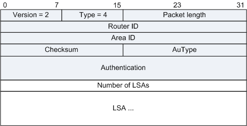
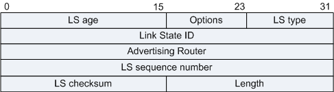

用来向对端Router发送其所需要的LSA或者泛洪自己更新的LSA，内容是多条LSA（全部内容）的集合。LSU报文（Link State Update Packet）在支持组播和广播的链路上是以组播形式将LSA泛洪出去。为了实现Flooding的可靠性传输，需要LSAck报文对其进行确认。对没有收到确认报文的LSA进行重传，重传的LSA是直接发送到邻居的。

| 字段 | 长度 | 含义 |
|---|---|---|
| Number of LSAs | 32比特 | LSA的数量。 |
常用的LSA共有5种，分别为：Router-LSA、Network-LSA、Network-summary-LSA、ASBR-summary-LSA和AS-External-LSA。
所有的LSA都有相同的报文头：

| 字段 | 长度 | 含义 |
|---|---|---|
| LS age | 16比特 | LSA产生后所经过的时间，以秒为单位。无论LSA是在链路上传送，还是保存在LSDB中，其值都会在不停的增长。 |
| Options | 8比特 | 可选项：
|
| LS type | 8比特 | LSA的类型：
|
| Link State ID | 32比特 | 与LSA中的LS Type和LSA description一起在路由域中描述一个LSA。 |
| Advertising Router | 32比特 | 产生此LSA的路由器的Router ID。 |
| LS sequence number | 32比特 | LSA的序列号。其他路由器根据这个值可以判断哪个LSA是最新的。 |
| LS checksum | 16比特 | 除了LS age外其它各域的校验和。 |
| length | 16比特 | LSA的总长度，包括LSA Header，以字节为单位。 |
Router-LSA（Type1）：每个路由器都会产生，描述了路由器的链路状态和花费，在所属的区域内传播。
| 字段 | 长度 | 含义 |
|---|---|---|
| Link State ID | 32比特 | 生成LSA的Router ID。 |
| V (Virtual Link) | 1比特 | 如果产生此LSA的路由器是虚连接的端点，则置为1。 |
| E (External) | 1比特 | 如果产生此LSA的路由器是ASBR，则置为1。 |
| B (Border) | 1比特 | 如果产生此LSA的路由器是ABR，则置为1。 |
| # links | 16比特 | LSA中所描述的链路信息的数量，包括路由器上处于某区域中的所有链路和接口。 |
| Link ID | 32比特 | 路由器所接入的目标，其值取决于连接的类型：
|
| Link Data | 32比特 | 连接数据，其值取决于连接的类型：
|
| Type | 8比特 | 路由器连接的基本描述：
|
| # TOS | 8比特 | 连接不同的TOS数量。 |
| metric | 16比特 | 链路的开销值。 |
| TOS | 8比特 | 服务类型。 |
| TOS metric | 16比特 | 和指定TOS值相关联的度量。 |
Network-LSA（Type2）：由广播网或NBMA网络中的DR产生，Network-LSA中记录了这一网络上所有路由器的Router ID，描述本网段的链路状态，在所属的区域内传播。
| 字段 | 长度 | 含义 |
|---|---|---|
| Link State ID | 32比特 | DR的接口IP地址。 |
| Network Mask | 32比特 | 该广播网或NBMA网络地址的掩码。 |
| Attached Router | 32比特 | 连接在同一个网络上的所有路由器的Router ID，也包括DR的Router ID。 |
Network-summary-LSA（Type3）：描述区域内所有网段的路由，并通告给其他相关区域。
ASBR-summary-LSA（Type4）：描述到ASBR的路由，通告给除ASBR所在区域的其他相关区域。
Type3和Type4的LSA有相同的格式，它们都是由ABR产生。
| 字段 | 长度 | 含义 |
|---|---|---|
| Link State ID | 32比特 | 通告的网络地址。如果是ASBR Summary LSA，此字段表示ASBR的Router ID。 |
| Network Mask | 32比特 | 该广播网或NBMA网络地址的掩码。如果是ASBR Summary LSA，此字段无意义，设置为0.0.0.0。 |
| metric | 24比特 | 到目的地址的路由开销。 |
| TOS | 8比特 | 服务类型。 |
| TOS metric | 24比特 | 和指定TOS值相关联的度量。 |
通告缺省路由时，Link State ID和Network Mask都设置为0.0.0.0。
AS-External-LSA（Type5）：由ASBR产生，描述到AS外部的路由，这是五种LSA中，唯一一种通告到所有区域（除了Stub区域和NSSA区域）的LSA。
| 字段 | 长度 | 含义 |
|---|---|---|
| Link State ID | 32比特 | 通告的网络地址。 |
| Network Mask | 32比特 | 通告的目的地址的掩码。 |
| E | 1比特 | 外部度量值类型：
|
| metric | 24比特 | 到目的地址的路由开销。 |
| Forwarding Address | 32比特 | 到所通告的目的地址的报文将被转发到这个地址。 |
| External Route Tag | 32比特 | 添加到外部路由上的标记。OSPF本身并不使用这个字段，它可以用来对外部路由进行管理。 |
| TOS | 8比特 | 服务类型。 |
| TOS metric | 24比特 | TOS附加距离信息。 |
Type5的LSA可以用来通告缺省路由，此时Link State ID和Network Mask都设置为0.0.0.0。
| 标准 | 描述 |
|---|---|
| RFC2328 | OSPF Version 2 |